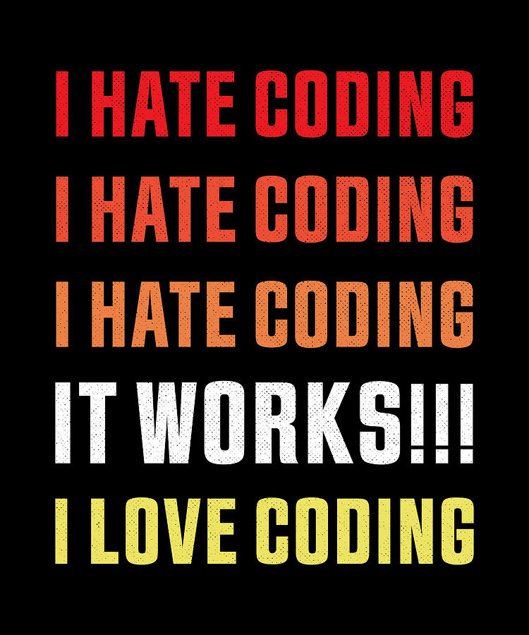

Coding is fun. GitHub can be frustrating.
You’ll get there.
Do you have to have fonts downloaded to use them?
No. You have to have them in a service such as Adobe Fonts or Google Fonts.
I learned that I prefer to use Brackets because you can preview the website without actually publishing it.
You don’t need to publish to preview your work. Just open the index.html file in your browser.
I learned that there are shortcuts in VS Code to limit mistakes and make the process of coding go faster, like
html:5for the whole setup to be made automatically.
Not a bad idea to use them.
There is a color picker on the Mac that is super easy to use, so I don’t need to use random websites to find the RGB color.
Digital Color Meter.
Today solidified just how useful Google can be. Very.
You sound surprised, though.
Using find/replace can save lots of time when coding. This particularly was useful in our lab when we were required to add classes to
<p>elements.
Find/replace is extremely helpful.
Saw some very cool website designs while picking our web alignment example.
Finding good design is one of the goals of the assignment.
I don’t remember the last time I ate white chocolate, but the white egg Bruno gave me was really yummy.
You earned it by helping (very patiently) someone else in the lab.
I love how everyone is comfortable asking for and giving help on the assignments.
I love it even more!
I wasn’t able to go in person to lab and I realized how much harder it is to do the assignments without support from other classmates.
I know. I bet it is. We hope to have you back next week!
Shoutout to Tanya who is amazing and helped teach me, so eventually I could help teach others who needed help!
I was happy to see you paying forward.
Aidan helped me so so much!
I saw it!
I really enjoyed working with Claire this week.
It’s nice to meet new people, isn’t it?
Katie helped me a lot in lab when it came to fixing little errors in my code!
I’m glad to hear!
Lexanna understands concepts really quickly.
I’m not surprised.
Rachel and Sarah helped me upload my codes to GitHub, which I really appreciated.
That’s nice. But I hope everybody is comfortable with GitHub next week.
Shoutout to Katrina for being incredibly helpful and showing me how to add the border line above h3.
She was quite helpful in lab.
Shoutout to Lauryn and Anna, we were struggling, but we persevered!
You’ll be fine.
Shoutout to Tanya for explaining how to work with my CSS file when I got stuck.
Tanya is killing it there!
Shoutout to Tanya again!! She helped me with the lab assignment so much.
Sounds like we’ll have a lot of shoutouts to Tanya here.
The people around me (again) are very useful in helping me (thank you Lexi, Sarah and Zara).
GrC students are smart and kind!
W3Schools is a great resource to check basic info on HTML and CSS.
I’ve relied on W3Schools for years. But somewhat recently, I have relied more on MDN. I find it more complete. They’re both excellent, though!
CSS is kinda similar to p5.js layout.
I’m not familiar with p5.js. I’ll take a look. Thanks for sharing, Jenna!
I enjoyed sharing how to access HTML documentation with straight through VS code so you can learn how to use any property instantly.
That’s a nice trick indeed! Thanks for sharing, Tanya!
I used https://developer.mozilla.org/en-US/docs/Web/CSS for the syntax of CSS properties I didn’t know.
That’s a great resource!
The internet is a great resource when you’re unsure of certain declarations and how to use them.
I’ve been doing webdesign for more than twenty years now. Always looking things up.
In the future, I plan to start on my assignments before class that way I can beat the learning curve and get questions answered during the lab time.
Not a bad idea!
I feel like I’m starting to get a hang of this class’s schedule, I’ve been blocking out time to get the assignments done and turning them in on time!
Good job!
I learned the importance of copy and pasting direct lines of code rather than attempting to type things out, that way there is no room for error.
You’re correct.
CSS is not forgiving. You need commas between your RGB values but not between you margin/padding values.
All true statements.
Knowing when to use
remversusemis still confusing to me.
Just use rem and make your life easier.
One way I remember the order of padding and margin is by thinking of the acronym TRBL (trouble).
That’s a mnemonic device that might be helpful. I still find the clock easier, but other may find TRBL easier to remember. Thanks for sharing, Aidan!
Topics I want to investigate next: how to insert links into a web page; how to create rounded rectangles and other shapes on a web page; animation/movement (probably jumping the gun on this one); mouse hover effects.
To be honest, none of these are too complex. We’ll get to some of them soon.
Using
reminstead ofemis much more simple and can save you from having to make constant changes and calculations to line items up.
Correct.
And finally, I learned that I have commitment issues! I always forget to commit my changes, so I need to get better about that.
You gotta commit!
I also learned that CSS can be compared to paragraph style which helped me better understand it.
It’s very much like it.
I am thankful I am learning how to create web pages accessible to those with disabilities. It's so important and obviously overlooked. My mom sent me this article: Dozens of Northern California wineries face website accessibility lawsuits.
If not being a monster is not good enough reason to make your website accessible, maybe not being suited is. Thanks for sharing, Claire’s mom!
Using all uppercase will cause text-to-speech to read the word aloud letter by letter, making the life of a blind person even harder, which would make you a monster.
Correct. A monster, to say the least.
I kind of wish we wrote thecss file for the restaurant menu from scratch because it would’ve helped me understand the structure of the code better and force myself to understand the concepts at a deeper level, but I’m sure we’ll have more opportunities to do that!
Next assignment, my friend.
Coding can be frustrating but when you figure it out, it is super rewarding!
